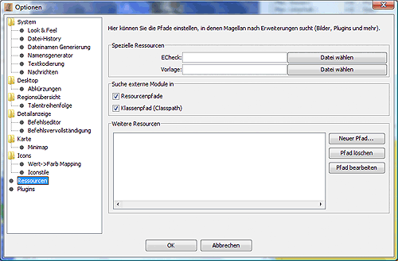

Hier können die Pfade/Verzeichnisse eingestellt werden, in dem die Zusatzprogramme Vorlage, zum Erstellen von Zugvorlagen, und ECheck, dem Syntaxchecker für Eressea, liegen.
Ein Klick auf die Schaltfläche öffnet einen Dateiauswahldialog, in dem man die ausführbaren Dateien der jeweiligen Programme auswählt.